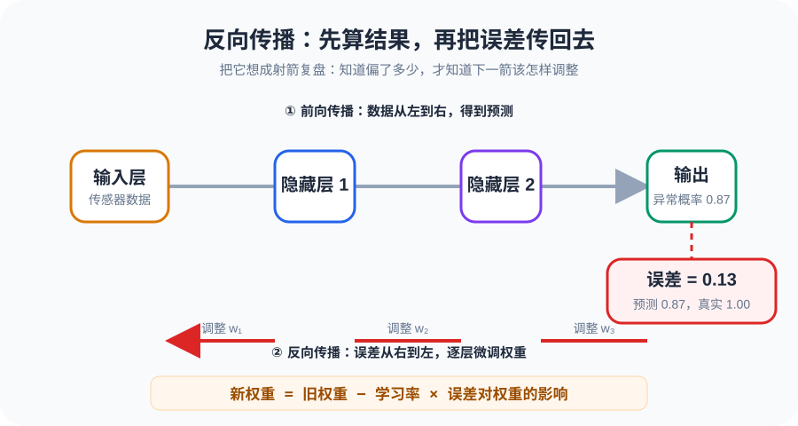
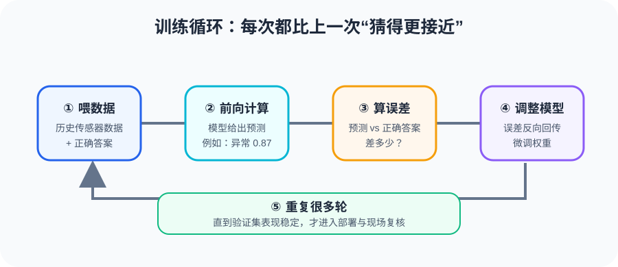

不用公式，只用直觉 —— 从一个"投票器"开始，搞懂深度学习的全部骨架
别被"神经网络"四个字吓住。我们先拆到最小单位 —— 一个神经元。搞懂它，后面的都是在叠积木。
想象你是一个车间主任，手底下有三个传感器值班员：一个量温度，一个量振动，一个量电流。每天他们都来向你汇报数据，你要拍板："这台设备正不正常？"
但问题是 —— 三个人的话语权不一样。振动那哥们经验最老到，他说的话你得重点听；温度还行，参考参考；电流的新来的，听听就好。在神经网络里，这个"话语权"就叫 weight（权重）。
你心里还有个倾向 —— 你这个人天生比较谨慎，稍微有点不对就想报警。这个天生的倾向，叫 bias（偏置）。
好，现在三个人的意见汇总到一起，加上你自己的倾向，算出一个总分数。但你还不是马上就喊"异常"——只有分数高到一定程度，你才会表态。这个"表态规则"，就是 activation function（激活函数）。
让我们用工厂的语言重新说一遍：
权重 = 每个输入的话语权，偏置 = 天生偏好，激活函数 = "过了我的底线我才表态"。
一个神经元做的事情，本质上就是：output = activation( Σ weight × input + bias )
一个神经元只能做简单判断。但把几百个神经元连成网络，就能学会非常复杂的模式。
还记得刚才的例子吗？一个神经元看三个传感器，做一次判断。但现实中，"设备异常"不是单一信号能判定的 —— 温度升高本身不说明问题，温度升高同时振动变大才值得警惕，而如果电流也飘了，那基本就可以定性了。
所以我们需要多层神经元来逐级提取信息：
就像一条质检流水线：第一道工位看线头（单个信号异常），第二道看布纹（信号组合是否合理），最后一道判定合格/不合格（下结论）。
每一层都在做"从低级到高级"的特征抽象 —— 第一层看细节，中间层看组合，最后一层下结论。
现在，让我们跟着一组真实数据，完整走一遍网络。这一步叫 forward propagation（前向传播）。
假设当前设备读数：
注意几个关键细节：
0，因为 ReLU 把负数直接截断了 —— 这意味着"电流信号"在这条路径上没通过3.1），因为振动信号权重最高 —— 这和"振动最有话语权"的设定吻合2.8）远大于"振动+电流"（0.4）—— 网络自己学会了"温度和振动一起异常才最危险"最后，输出层用 Sigmoid 函数把结果压到 0~1 之间，得到 异常概率 = 0.87。超过 0.5 就报警！
前向传播就是：数据从左到右，一层一层算，每层都在做 加权求和 → 激活，最后输出预测结果。整个过程没有魔法，只有乘法和加法。
网络猜出了 0.87，但真实标签是 1.0（确实异常）。猜得不够准，怎么办？往回找原因，调整权重，下次猜准一点。
这个过程叫 backpropagation（反向传播）。用最直觉的类比：
🎯 射箭：你射了一箭，偏了。看偏了多少（误差），然后调整姿势（权重），再射一箭。反复调整，越射越准。

这里有个关键参数叫 learning_rate（学习率）—— 每次调整多少。
反向传播 = "算出猜错了多少 → 沿路往回找责任人 → 调权重 → 下次准一点"。学习率决定了每次调整的步幅。
把前向传播和反向传播串起来，就是一个完整的训练循环。

把所有训练数据完整过一遍，就叫一个 epoch。一般要跑几十到几百个 epoch，网络才会收敛（学明白）。
就好比复习考试 —— 把课本从头到尾读一遍叫一个 epoch，读一遍不够，得多读几遍，每遍都会有新的理解。
但有个坑 —— 训练太久也会出问题。网络可能把训练数据"背"下来了，考试题都会，但换个新题就不会了。这就是 overfitting（过拟合）。
怎么对付过拟合？常见三招：
过拟合 = 死记硬背，做过的题都会，没做过的就不会。正则化 = 限制笔记厚度，逼你理解而不是抄笔记。早停 = 考前别刷题刷到走火入魔。
最后，我们把今天学到的所有概念，一一映射到工厂里去。
| 神经网络概念 | 工厂里的对应 | 说明 |
|---|---|---|
| Neuron 神经元 | 一个判断节点 | 相当于一个"有经验的师傅"，综合多条线索做判断 |
| Weight 权重 | 传感器重要程度 | 振动传感器的话语权 > 温度 > 电流，权重自动从数据中学到 |
| Bias 偏置 | 报警门槛的先天倾向 | 天生谨慎的师傅偏置高，容易报警；天生乐观的偏置低 |
| Activation 激活函数 | 决策阈值 | 信号不够强就不表态（ReLU截断），过了底线才输出 |
| Forward Pass 前向传播 | 实时推理/在线检测 | 传感器数据进来 → 网络一层层算 → 输出异常概率 |
| Backward Pass 反向传播 | 模型训练（离线） | 用历史数据训练模型，产线不停车，离线完成 |
| Learning Rate 学习率 | 每次调参的步幅 | 太大容易过冲，太小收敛太慢，需要调到刚好 |
| Epoch 轮次 | 把历史数据完整看一遍 | 看一遍不够，多看几遍，但看太多会"背题" |
| Overfitting 过拟合 | 死记硬背历史工况 | 只对训练数据准，换条产线就不灵了 |
工业场景中，前向传播是产线实时运行的核心（毫秒级推理），反向传播只在离线训练时发生（小时~天级）。训练好的模型部署后只做前向传播，不会边工作边学习。